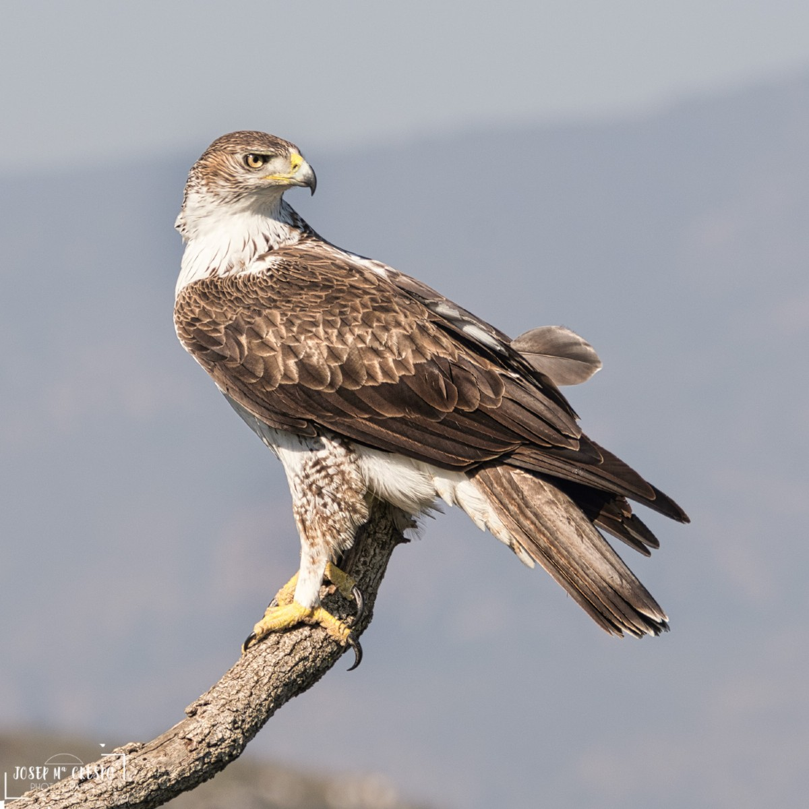

Águila perdicera
Categoría de protección: A nivel regional: Especie en peligrode extinción. Anexo I, Ley 7/95, de 21 de abril, de la Fauna Silvestre de la Región de Murcia. A nivel nacional: Anexo II. Especies y subespecies catalogadas «de interés especial». Real Decreto 439/90 por el que se regula el Catálogo General de Especies Amenazadas A nivel europeo: Anexo I. Directiva 79/409/CEE del Consejo, de 2 de abril de 1979, relativa a la conservación de las aves silvestres
Hábitat:
Ave que nidifica principalmente en cortados calizos. Mantiene cierta competencia con el águila real, excluyéndose ambas en sus territorios de cría. Precisa de espacios abiertos con abundantes presas (perdices, palomas y conejos principalmente).
Distribución:
Esta especie se encuentra en la región mediterránea y sur de Asia. En España la mayor parte de la población se encuentra en la Cordilleras Subbéticas, Penibéticas, en el Sistema Ibérico y en Sierra Morena-Montes de Toledo.
Población:
Presente en la mayor parte de la Región, aunque de forma muy escasa. Sus poblaciones están disminuyendo. Falta en la grandes llanuras y en las zonas muy elevadas.